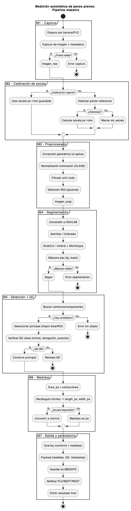

2. Sistema de visión artificial#
Resumen
El presente documento recoge los trabajos relativos al módulo de visión artificial de FLATCLASS. Este módulo es el responsable de la adquisición, normalizado, segmentación y extracción de las características mormométricas de los alevines de lenguado.
Entregable: E1.2
Versión: 1.0
Autor: Javier Álvarez Osuna
Email: javier.osuna@fishfarmfeeder.com
ORCID: 0000-0001-7063-1279
Licencia: CC-BY-4.0
Código proyecto: IG408M.2025.000.000072
{kind=link}
2.1. Introducción#
Uno de los objetivos técnicos plantedos en FLATCLASS se centra en el Desarrollo e integración de un sistema de visión artificial de alta resolución que permita la captura precisa de imágenes de los alevines en tiempo real, asegurando una segmentación eficaz y el cálculo automático del área de superficie, longitud y anchura de cada individuo. El sistema automático desarrollado permite la medición sin contacto de las características morfométricas de lenguados (Solea solea) tales como la longitud total (L), la anchura corporal (A) y la superficie real (S) a partir de las imágenes fotográficas, obtenidas con una cámara Datalogic P22C 600-000 ML, mediante un algoritmo de procesado. Este algoritmo permite realizar la medición incluso cuando la cola del pez plano está deformada o cuando el pez se encuentra orientado de manera aleatoria, informando del nivel de fiabilidad de las mediciones cuando los resultados puedan persentar dudas. Este último aspecto es especialmente importante si tenemos en cuenta que el proceso de clasificación de juveniles se suele producir en ambientes de baja luminosidad y alta concentración de humedad que introduce importantes restricciones en la calidad de las imágenes obtenidas.
El núcleo del sistema se sustenta en GrabCut, un método de segmentación de imágenes interactivo basado en teoría de grafos y optimización de cortes mínimos en campos aleatorios de Markov (MRF) definido por primera vez por Rother et al., en 2004. El usuario define inicialmente un recuadro aproximado que contiene el pez, permitiendo al algoritmo estimar la distribución de color del primer plano y el fondo mediante modelos de mezcla gaussiana (Gaussian Mixture Models, GMM). Posteriormente, se plantea una función de energía que combina un término regional (basado en las probabilidades del GMM) y un término de continuidad espacial (prefiriendo regiones conectadas con etiquetas uniformes), la cual se minimiza mediante un corte en el grafo (graph cut). Este proceso se itera hasta converger en una segmentación refinada del pez frente al fondo [Alsmadi et al., 2022].
GrabCut ha sido objeto de mejoras continuas en los últimos años, incluyendo variantes que integran mapas de saliencia, superpíxeles o funciones de energía modificadas que permiten segmentaciones más precisas y automáticas [Wang et al., 2023]. En el contexto acuícola, diferentes trabajos han aplicado algoritmos derivados de GrabCut (como versiones adaptadas o iterativas) para refinar la segmentación en imágenes de peces. Por ejemplo, Huang et al., 2023 han desarrollado un sistema de visión binocular en acuicultura utilizó GrabCut adaptativo por contraste para segmentar peces bajo el agua, logrando un error porcentual medio en la medida de longitud de solo 0,9%. Asimismo, en el ámbito de la fenotipificación de peces de tilapia, GrabCut se ha empleado para afinar muestras en los bordes de segmentación, mejorando el IoU hasta un 81 % cuando se combina con redes profundas [Feng et al., 2023].
Para la extracción de los parámetros morfométricos de alevines de lenguado a partir de imágenes digitales en vista dorsal, GrabCut es especialmente adecuado por varias razones clave. Primero, requiere mínima interacción (únicamente un recuadro inicial o ROI - Region Of Interest), lo cual es práctico en entornos productivos con alto flujo de muestras. Segundo, al basarse en modelos estadísticos de color y continuidad espacial, puede separar con precisión el pez del fondo uniforme de la cinta que lo transporta, incluso con variaciones de iluminación. Esto resulta esencial para cálculos fiables de longitud, anchura y superficie del pez. Finalmente, es computacionalmente eficiente y ya está implementado en bibliotecas comunes como OpenCV, lo que facilita su integración en un sistema automatizado de procesamiento de imágenes en planta.
El flujograma del algoritmo de extracción de características morfométricas desarrollado se recoge en la siguiente figura:
{kind=link}

Fig. 2.1 Pipeline del sistema de extracción de características#
Como se puede apreciar, el sistema está formado por siete módulos funcionales cada uno de ellos responsable de una función específica. En las siguientes secciones se estudia con mayor detalle cada uno de ellos y las tecnologías hardware-software usadas.